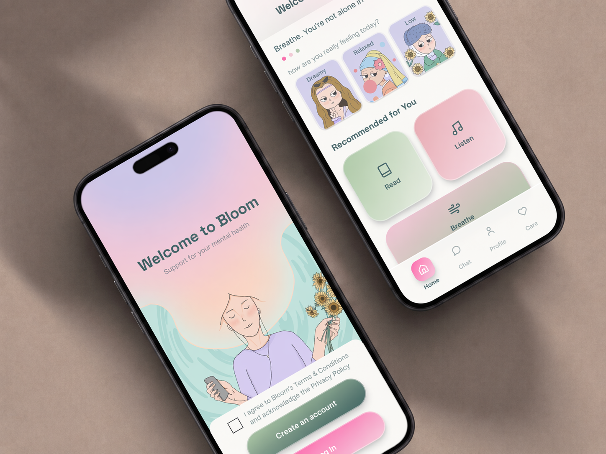
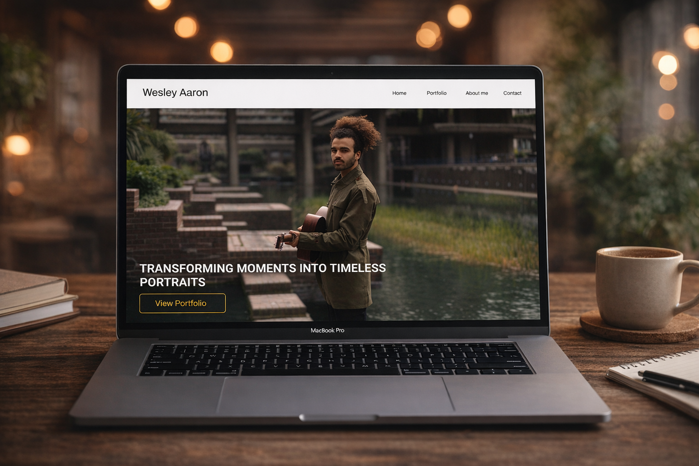

UX/UI & App Design
Digital Product Experience
BLOOM: AI SUPPORTED WELLBEING APP

Bloom is a concept wellbeing app designed to support people experiencing anxiety, depression, and low mood through AI-powered emotional support. Created as part of my Design for Change project, Bloom explores how digital design can respond to the growing gap in access to mental health support.
The app is designed as a calm and emotionally supportive space where users can check in with their feelings, track their mood over time, and access personalised wellbeing tools such as guided conversations, calming exercises, and tailored recommendations. Bloom's visual identity is inspired by soft pastel colours and gentle illustration, helping the experience feel warm, safe, and less clinical.
A key part of the concept is the use of AI in a responsible way. Bloom is not intended to replace therapists, but to offer immediate support during moments when users may feel overwhelmed or alone. The project also considers important issues such as privacy, safety, transparency, and ethical design, showing how technology can be used with care in sensitive areas like mental health.


HARVEST N16


Harvest N16 is a UX and UI group project, focused on addressing health and sustainability challenges. The app is designed to help users track nutrition, shop sustainably, and stay motivated through features such as calorie tracking, personalised recipes, gamification, and rewards for healthy habits.
The project draws inspiration from platforms like Noom, HelloFresh, and Duolingo, combining education, motivation, and e commerce to create an intuitive and user friendly experience.
My Role and Contributions
I played a key role in the UX and UI design process, contributing to both research and visual execution.
I conducted UX research and developed user personas based on real consumer behavior to guide design
decisions. I designed the home page, tracking page, and sign in and sign up pages in Figma, ensuring a
clean and modern interface.
I also created custom icons using Illustrator and educational card illustrations in Procreate to enhance user engagement. I helped develop a functional prototype that aligned with the project's health and sustainability goals, and participated in user testing by collecting feedback, identifying usability issues, and refining the design based on peer testing insights.
Prototype link
View interactive prototype in Figma
PHOTOGRAPHY PORTFOLIO WEBSITE

I designed and developed a photography portfolio website for Wesley, a professional photographer, to present his work in a clean, visually engaging, and user friendly manner. The website follows a minimalist design approach and is fully responsive, ensuring an optimal viewing experience across desktop, tablet, and mobile devices. Clients can browse photography collections effortlessly while maintaining fast load times for high resolution images.
My Role and Contributions
I was responsible for the web design and user experience, creating a layout that prioritizes simplicity
and immersive photo viewing. I handled the front end development using HTML, CSS, and JavaScript, and
deployed the website on Netlify. I also optimized performance to ensure quick loading times and
implemented responsive design principles to maintain consistency across all screen sizes.
This project allowed me to apply my web design and development skills in a real world setting. It strengthened my ability to create visually appealing, responsive layouts while balancing performance and usability. In the future, I plan to enhance the website by adding interactive features such as a blog or a client booking system.


{kind=link}
{kind=link}
{kind=link}